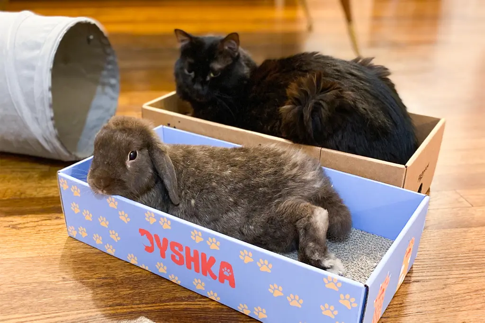

Bunny Heaven
Bunny Heaven
A Beginner’s Guide to Bunny Care
Bunnies, with their soft fur, twitching noses, and gentle demeanor, have become increasingly popular as pets. While they may seem like low-maintenance companions, caring for a bunny requires a deep understanding of their unique needs. This guide aims to provide new bunny owners with the essential knowledge they need to ensure their furry friend lives a healthy and happy life.
Housing: Creating a Safe and Comfortable Home
One of the first steps in bunny care is providing an appropriate living
space. Contrary to popular belief, bunnies require more than just a
simple cage. They need ample space to move around, explore, and
exercise. Ideally, a bunny's home should include a large, spacious
enclosure or an entire bunny-proofed room where they can hop around
freely.
The enclosure should be equipped with a litter box, a comfortable place
to sleep, and areas for hiding and playing. Bunnies are prey animals by
nature, so they appreciate having a safe space where they can retreat
when they feel threatened. Additionally, the flooring should be soft and
gentle on their delicate feet, with materials like straw, hay, or fleece
blankets being ideal.
Nutrition: Feeding Your Bunny for Optimal Health
A well-balanced diet is crucial to a bunny’s overall health and
well-being. The foundation of a bunny’s diet is high-quality hay, which
should be available to them at all times. Hay not only provides
essential nutrients but also helps wear down their continuously growing
teeth, preventing dental issues.
In addition to hay, bunnies should be given fresh vegetables daily, such
as leafy greens like romaine lettuce, cilantro, and parsley. However,
it's important to introduce new vegetables slowly to avoid digestive
problems. Pellets can also be part of a bunny’s diet, but they should be
given in moderation and should be high in fiber with no added sugars or
artificial ingredients.
Fresh water should always be available, either in a water bottle or a
sturdy bowl. Avoid feeding your bunny foods that are toxic to them, such
as chocolate, avocado, or anything high in sugar and starch. By
providing a balanced diet, you’ll help ensure that your bunny stays
healthy and energetic.
Grooming: Keeping Your Bunny Clean and Comfortable
Bunnies are generally clean animals and groom themselves regularly.
However, they still need some assistance from their owners. Regular
brushing is essential, especially for long-haired breeds, to prevent
matting and to help manage shedding. During shedding seasons, brushing
should be done more frequently to avoid hairballs, which can lead to
serious digestive issues.
Unlike other pets, bunnies do not need regular baths. In fact, bathing
can be very stressful for them and can even lead to hypothermia if not
done properly. Instead, focus on spot cleaning if your bunny gets dirty,
using a damp cloth to gently wipe away any dirt or debris.
Bunnies' nails should also be trimmed regularly to prevent overgrowth,
which can cause discomfort and difficulty moving. If you’re unsure how
to trim your bunny’s nails, a veterinarian or a professional groomer can
provide assistance.
Health Care: Preventing and Treating Common Issues
Regular veterinary care is vital for maintaining your bunny’s health.
It’s recommended to find a vet who specializes in exotic animals or has
experience with rabbits. Bunnies should have annual check-ups, during
which the vet can check their teeth, ears, and overall health.
Bunnies are prone to certain health issues, such as dental problems,
gastrointestinal stasis, and respiratory infections. Being aware of the
signs of illness, such as loss of appetite, lethargy, or changes in
droppings, can help you catch problems early and seek veterinary care
promptly.
Additionally, bunnies should be spayed or neutered to prevent unwanted
litters and reduce the risk of certain cancers. Spaying and neutering
can also help improve behavior and make your bunny a more pleasant
companion.
Socialization and Enrichment: Keeping Your Bunny Happy
Bunnies are social animals and thrive on interaction with their owners
and other bunnies. Spending time with your bunny each day, whether
through gentle petting, playtime, or simply sitting nearby, can help
strengthen your bond. It’s also important to provide mental and physical
stimulation through toys, tunnels, and opportunities to explore.
Enrichment activities can include hiding treats in a toy for your bunny
to find or creating a digging box filled with safe materials for them to
burrow in. Socialization and enrichment are key to preventing boredom
and ensuring that your bunny remains happy and healthy.
Conclusion
Caring for a bunny is a rewarding experience that requires a commitment to understanding and meeting their needs. By providing a safe and spacious home, a balanced diet, regular grooming, proper health care, and plenty of social interaction, you can ensure that your bunny enjoys a long, healthy, and happy life. While the responsibility is significant, the joy and companionship a bunny brings are well worth the effort. As with any pet, the more you invest in their care, the stronger and more fulfilling your bond will become.